请访问原文链接：IDA Pro 9.4.260713 (macOS, Linux, Windows) - 强大的反汇编程序、反编译器和多功能调试器 查看最新版。原创作品，转载请保留出处。
作者主页：sysin.org
IDA Pro
一个强大的反汇编程序、反编译器和多功能调试器。集成在一个工具中。
强大的反汇编程序、反编译器和多功能调试器
原始的反汇编器
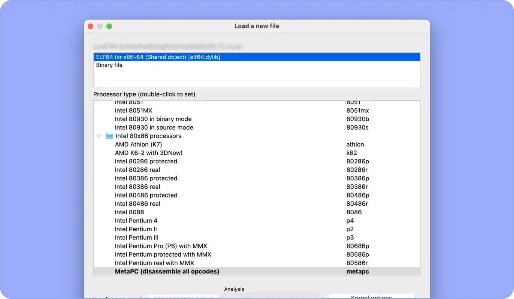
拆解几乎所有东西：
IDA 反汇编器因其对各种处理器和文件格式的无与伦比的支持而脱颖而出。这种卓越的多功能性使其成为首选。无论您是在分析嵌入式系统、移动应用程序还是复杂的多平台软件，IDA Pro 的全面兼容性都能确保您拥有完成任何任务的最佳工具。
支持的处理器和文件格式列表：https://docs.hex-rays.com/user-guide/disassembler/supported-processors
轻松、高质量的反汇编输出：
自动获得高质量的输出，无需使用 IDA 的反汇编操作功能，例如高级结构定义、命名、键入、注释等…
请参阅拆解图库：https://docs.hex-rays.com/user-guide/disassembler/disassembly-gallery
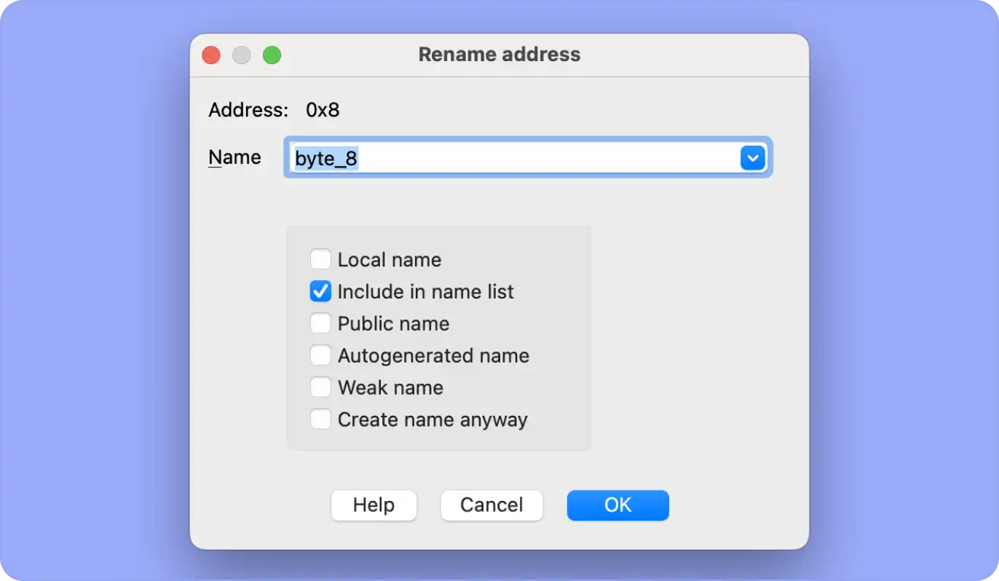
业界最值得信赖的反编译器
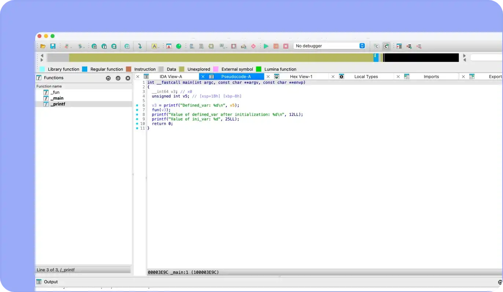
高质量、可读且可维护的伪代码：
IDA 反编译器专注于提供可读、可维护且在语义上与原始源代码相似的代码，这得益于高级抽象、语义保留、可读性、类型推断、结构恢复等。
探索 IDA 反编译器：https://hex-rays.com/decompiler
有关众所周知的函数的元数据。触手可及：
由 Hex-Rays 维护的 Public Lumina 服务器跟踪众所周知的函数的元数据，例如名称或操作数类型。您的 IDA 实例仅与 Public Lumina 服务器交换哈希值和元数据，避免通过网络传输敏感字节模式。
如果您希望控制元数据，请启用 Private Lumina 附加组件以使用您自己托管的 Lumina 服务器。
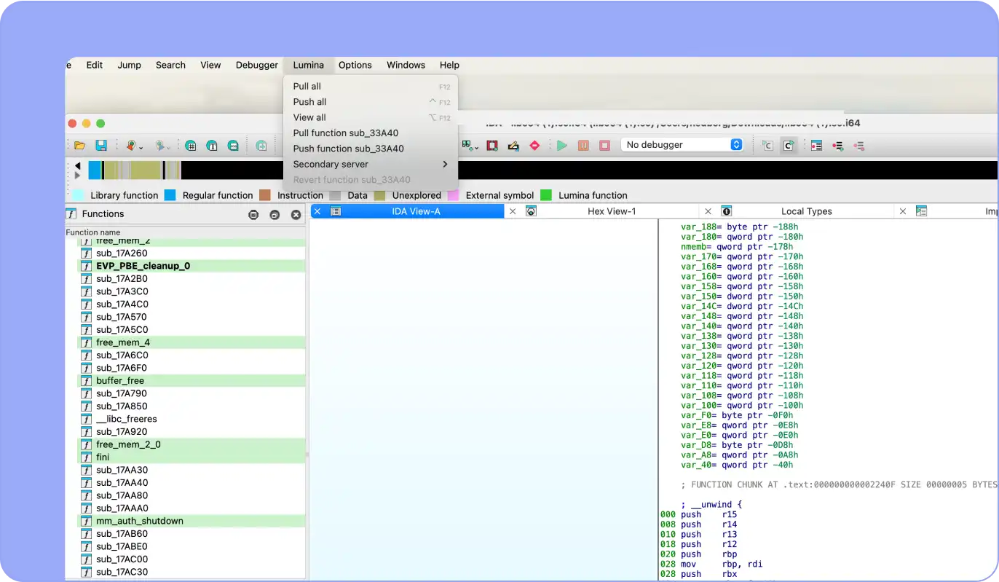
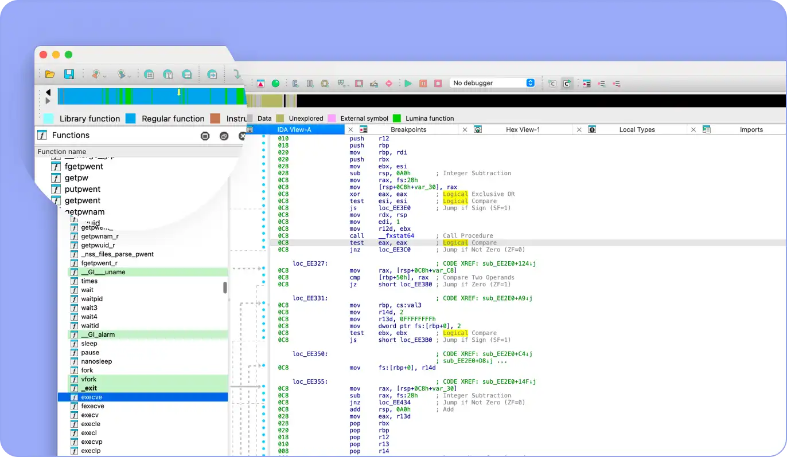
将代码模式与已知库进行匹配。增强您的分析能力：
使用 FLIRT（快速库识别和识别技术）来帮助逆向工程师识别二进制文件中使用的库。所有这些都是为了提高生成的反汇编代码的可读性。
查看详情：https://docs.hex-rays.com/user-guide/signatures/flirt/ida-f.l.i.r.t.-technology-in-depth
反混淆
使用 gooMBA 理解混淆的二进制文件
IDA Pro 极大地简化了逆向工程人员处理模糊二进制文件的工作流程，尤其是涉及混合布尔算术 (MBA) 表达式的二进制文件。gooMBA 插件随 IDA Pro 一起提供，并将代数和程序综合技术与智能启发法相结合，以实现一流的反混淆性能。它直接集成到 Hex-Rays 反编译器中，并为 SMT 求解器提供了一个桥梁，可以证明简化的正确性。
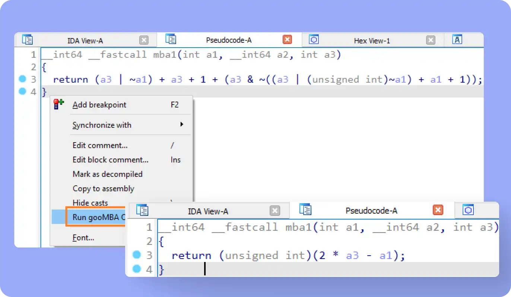
集成调试器
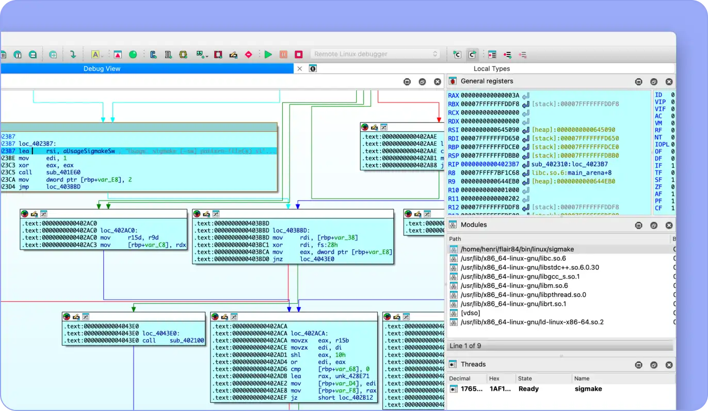
利用 IDA 调试器进行动态分析
IDA 不仅是一个反汇编器，也是一个多功能的调试器。除了协助其他程序内的错误检测和纠正之外，它还支持多个调试目标并可以处理远程应用程序。
使用 API、SDK 和库扩展到 IDA 之外
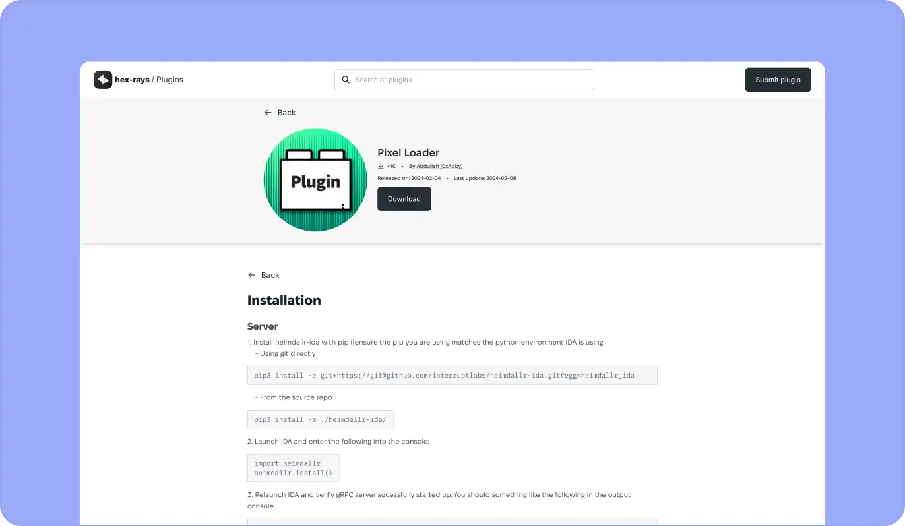
发现 200 多个社区插件。正在等你的：
如果您突破了 IDA 的极限，您还可以超越。开发您自己的 IDA 插件或使用开放存储库中社区制作的插件。珍惜用户社区的创新精神，每年举办一次插件大赛。
访问社区插件存储库：https://plugins.hex-rays.com/
自动化您的分析。添加您自己的功能。创建您自己的应用程序：
IDA Pro 附带一套工具来丰富您的开发人员体验
IDA C++ SDK使您能够开发自己的 GUI 功能等等。
IDAPython API 可帮助您创建自动化脚本、插件等。
IDA T使得从命令行运行 IDA 函数成为可能。
idalib允许您在无头模式下将 IDA Pro 作为库运行。
如果您选择 IDA Pro OEM 许可证，您还可以使用 idalib 创建衍生作品，例如将 idalib 嵌入到您的商业现成软件中或创建您的服务器应用程序。
检查开发人员文档：https://docs.hex-rays.io/developer-guide
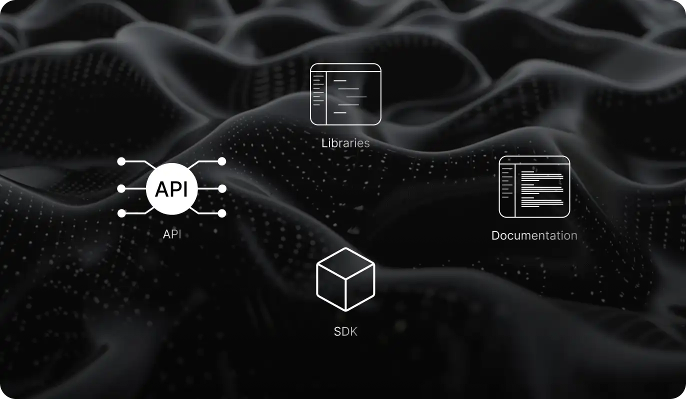
新增功能
请参看：IDA Pro 9.4 for macOS, Linux, Windows
安装教程
非常简单：
- macOS：双击 DMG，拖拽文件到 “Applications”。
- Linux：赋予可执行权限，执行安装文件，复制粘贴。
- Windows：双击点击下一步，复制粘贴。
具体复制粘贴步骤说明已包含在下载中。
IDA Pro for macOS
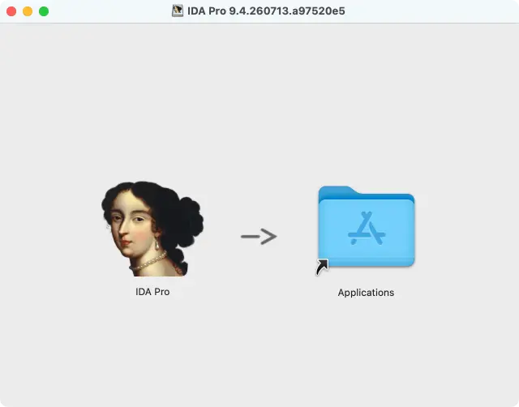
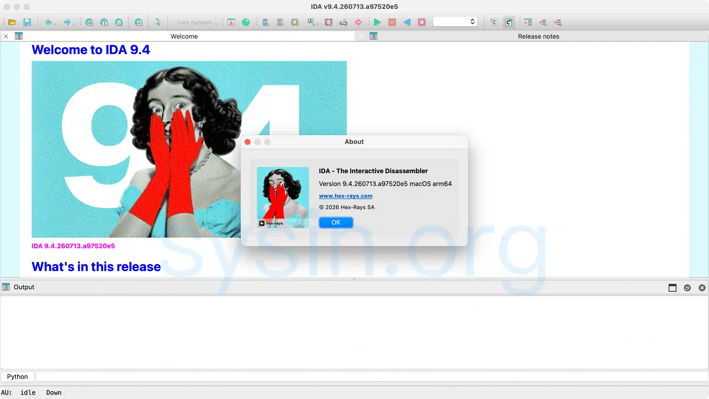
IDA Pro for Linux
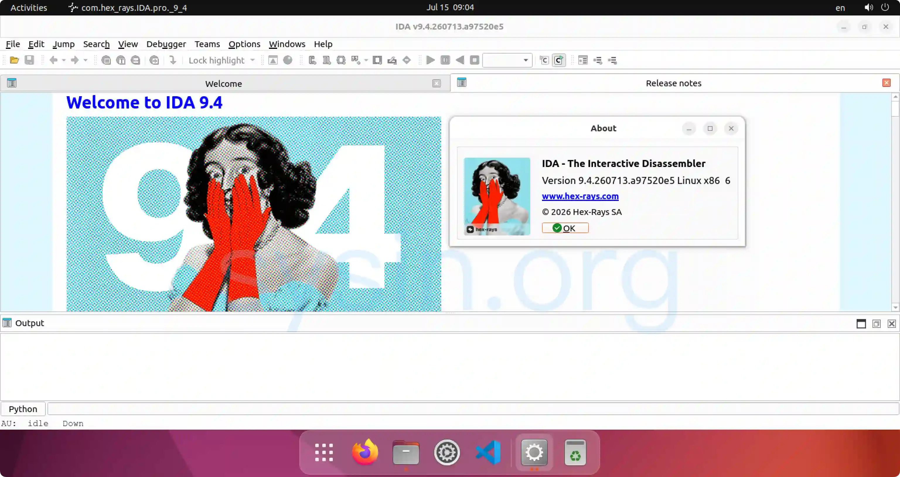
IDA Pro for Windows
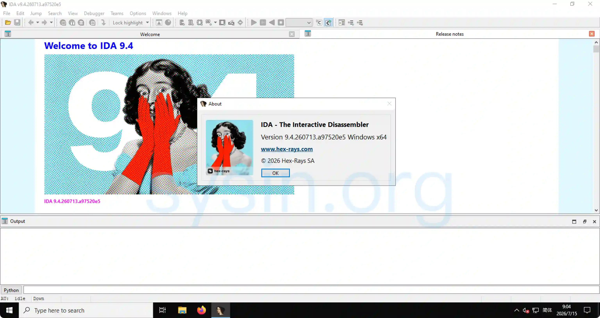
下载地址
Version History:
- IDA 9.0.240925 September 30, 2024
- IDA 9.0.20241216 (SP1) December 19, 2024
- IDA 9.1.250226 Feb 28, 2025
- IDA 9.2.250908 September 08, 2025
- IDA 9.3.260213 February 13, 2025
- IDA 9.3.260327 (SP1) March 27, 2025
- IDA 9.3.260421 (SP2) April 23, 2025
- IDA 9.4.260713 Jul 13, 2026
IDA Pro 9.4.260713 for macOS x64 (Intel 处理器)
IDA Pro 9.4.260713 for macOS arm64 (Apple 芯片)
IDA Pro 9.4.260713 for Linux x64
IDA Pro 9.4.260713 for Linux arm64
IDA Pro 9.4.260713 for Windows x64
IDA Pro 9.4.260713 for Windows arm64
更多：HTTP 协议与安全

文章用于推荐和分享优秀的软件产品及其相关技术，所有软件默认提供官方原版（免费版或试用版），免费分享。对于部分产品笔者加入了自己的理解和分析，方便学习和研究使用。任何内容若侵犯了您的版权，请联系作者删除。如果您喜欢这篇文章或者觉得它对您有所帮助，或者发现有不当之处，欢迎您发表评论，也欢迎您分享这个网站，或者赞赏一下作者，谢谢！
 支付宝赞赏
支付宝赞赏  微信赞赏
微信赞赏赞赏一下
敬请注册！点击 “登录” - “用户注册”（已知不支持 21.cn/189.cn 邮箱）。 请勿使用联合登录（已关闭）。